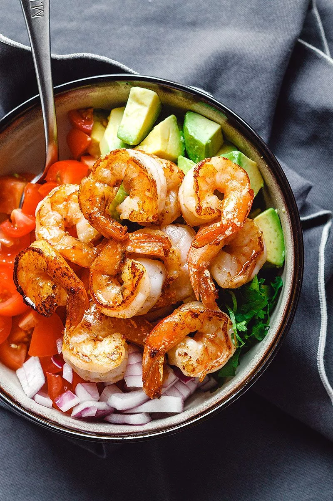

Shrimp Avocado Salad with Tomatoes
Shrimp and Avocado Salad – Fresh, easy, and filling! Here’s a healthy and delicious shrimp avocado salad recipe for two that tastes crazy good and is also paleo, Whole30, low-carb, and gluten-free. Loaded with the freshest ingredients: Avocados, cherry tomatoes, red onion, and cilantro tossed with freshly squeezed lime juice and a dash of olive oil. This shrimp avocado salad is a crazy healthy lunch!

INGREDIENTS
- 8 oz (225g) raw shrimp, peeled and deveined
- 1 large avocado, diced
- 1 handful cherry tomatoes, diced
- 1/2 red onion, minced
- Freshly chopped cilantro (or parsley)
- 2 tablespoons salted butter, melted
- 1 tablespoon lime juice
- 1 tablespoon olive oil
- Salt and fresh cracked pepper
DIRECTIONS
- To make the shrimp avocado salad: Toss shrimp with melted butter in a bowl until well-coated.
- Heat a skillet over medium-high heat. Add shrimp to the skillet in a single layer, searing for a minute or until it starts to become pink around the edges, then flip and cook until shrimp are cooked through, less than a minute.
- Transfer shrimp to a shallow plate and allow cooling while you prepare the other ingredients.
- Add all other ingredients (avocado, tomato, red onion, and cilantro) to a large mixing bowl. drizzle with olive oil and lime juice and toss to mix everything together.
- Add cooked shrimp and give a quick stir to mix together. Season the shrimp avocado salad with more salt and pepper, to taste. Enjoy!